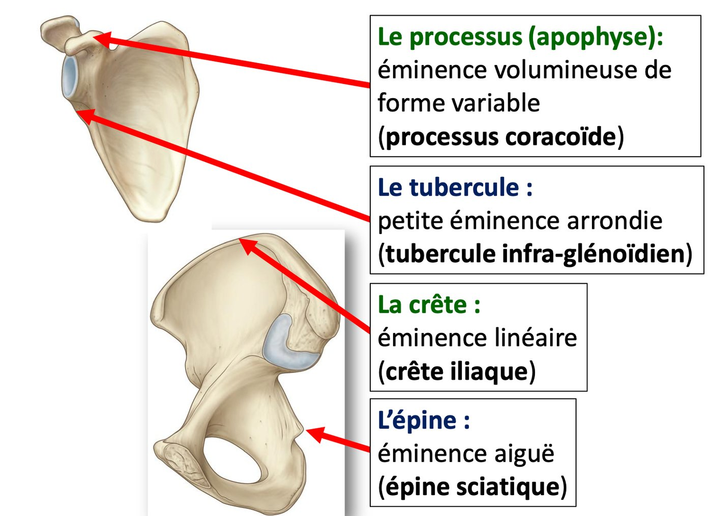
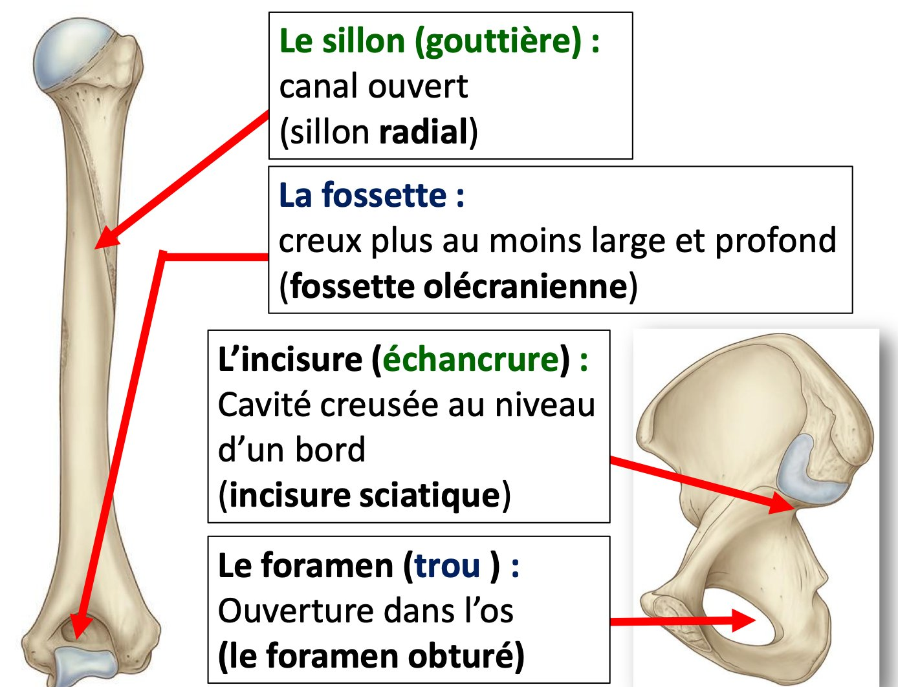
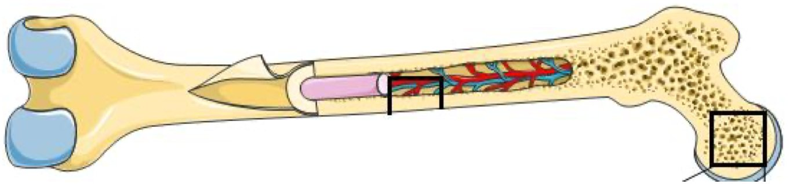
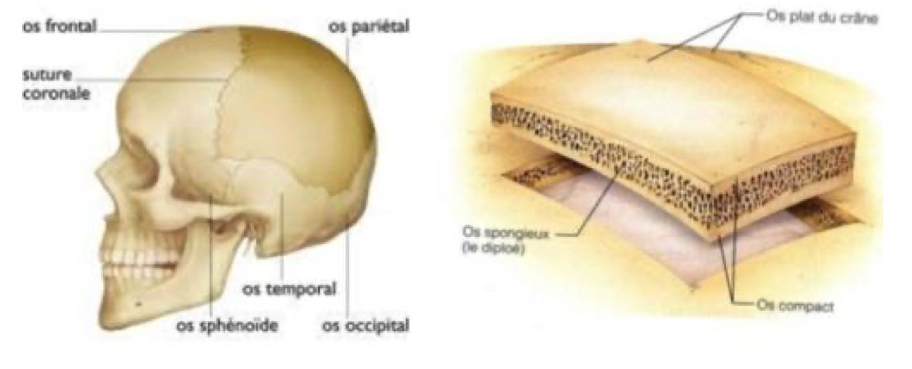
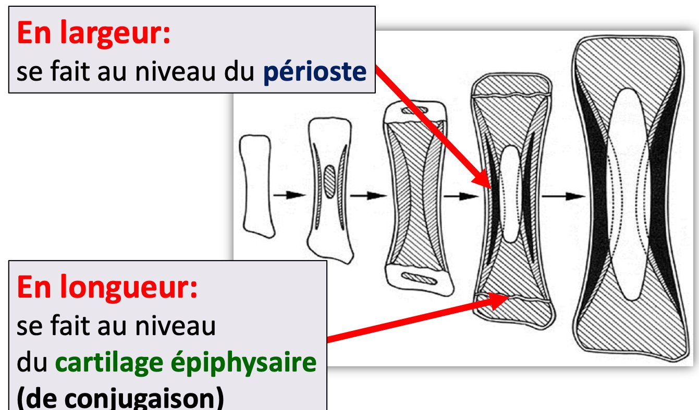

S1 · Anatomy · Summary
Skeletal system
- Essentials
- Roles
- Cartilage
- Bones & skeletons
- Bone types
- Morphology
- Structure
- Growth
- Exam traps
- Self-check
If you remember only this
- Skeleton = all bones and cartilages; in humans an endoskeleton with a cartilaginous and a bony part. Its study = osteology.
- Cartilage: strong but elastic, no vessels and no nerves. Hyaline = translucent, bluish, glassy (articular cartilage); fibrocartilage = whitish, collagen fibres (disc, meniscus, labrum); elastic = yellowish, elastic fibres (auricle, epiglottis).
- 206 constant bones + supernumerary ones (sesamoid, Wormian). Axial skeleton = bony head, hyoid, rib cage, spine. Appendicular = symmetrical, attached to the axial skeleton, bones of the thoracic and pelvic limbs.
- Non-articular eminences: process, tuberosity, tubercle, spine, crest. Non-articular cavities: groove, fossa, foramen, notch.
- Compact bone = osteons + interstitial lamellae, diaphyseal; spongy bone = trabeculae, epiphyseal (diploë in the skull vault).
- Growth in length = growth plate (epiphyseal cartilage); growth in width = periosteum.
1. Roles of the skeleton p. 3
Skeletal system
All the bones and cartilages that protect the organs, allow movement and form a framework on which the muscles are arranged.
In humans it is an endoskeleton with a cartilaginous and a bony part. Its study is osteology.
- Forms the framework that supports the body.
- Protects the organs.
- Site of muscle insertions.
- Bones store mineral salts (Ca).
- Bones produce blood cells.
- Cartilage facilitates movement and protects bone ends from wear.
2. Cartilaginous part of the skeleton p. 3 2023-24 · 2024-25 · 2025-26
- Cartilage = a strong but elastic tissue, devoid of blood vessels and nerves.
- In the fetus most of the skeleton is cartilaginous; in the adult only some cartilaginous structures persist.
| Type | Appearance | Fibres | Examples |
|---|---|---|---|
| Hyaline 🎯 | Translucent, bluish, glassy (vitreous) | — | Articular cartilage (covers joint surfaces), thyroid and cricoid cartilages of the larynx, tracheobronchial tree, nasal cartilages |
| Fibrocartilage (fibrous) 🎯 | Whitish and resistant | Rich in collagen fibres | Intervertebral disc, meniscus of the knee, acetabular labrum |
| Elastic | Yellowish | Rich in elastic fibres | Auricular cartilage (ear), epiglottis, small cartilages of the larynx |
Memory trick
Colours in order H-F-E = Blue-White-Yellow. Fibrocartilage examples are all things that sit between two
bones (disc, meniscus, labrum) — the "joint adaptation" structures past exams mention.
3.1–3.2 Bony part: definition and the two skeletons p. 3–4 2024-25 · 2025-26
- Bones are the rigid, hard structures of the body. 206 constant bones.
- The number varies because of supernumerary (inconstant) bones, in the extremities (foot, hand) and the skull: sesamoid bones (e.g. foot) and Wormian bones (skull).
Axial skeleton
- Bony head
- Hyoid bone
- Rib cage (ribs, sternum)
- Spine (vertebral column)
Appendicular skeleton
- Symmetrical
- Attaches to the axial skeleton
- Bones of the thoracic limbs and of the pelvic limbs
3.3 Classification of bones (by their 3 dimensions) p. 4
| Type | Dimensions | Parts | Example |
|---|---|---|---|
| Long | Length predominates over width and thickness | Diaphysis (body) in the middle + 2 ends, proximal and distal epiphyses, which bear the articular surfaces | Femur |
| Flat | Length and width predominate over thickness | 2 faces, borders, angles | Scapula |
| Short | 3 dimensions almost equal | — | Tarsal, carpal bones |
| Irregular (remark) | Fits none of the 3 types | — | Vertebra |
3.4 Bone morphology — eminences and cavities p. 4 2023-24 · 2024-25 · 2025-26
The bone surface is irregular: reliefs (eminences, protrusions) and cavities (depressions). Each is either articular or non-articular.
| Articular | Non-articular | |
|---|---|---|
| Eminences | Head — e.g. humeral head, femoral head | Used for ligament attachments or muscle
insertions: • Process (apophysis): large eminence of variable shape — coracoid process • Tuberosity: rounded eminence (notes only) • Tubercle: small rounded eminence — infraglenoid tubercle • Spine: sharp (acute) eminence — sciatic spine • Crest (ridge): linear eminence — iliac crest |
| Cavities | Correspond to the articular eminences — e.g. trochlear notch of the ulna | For the
passage or attachment of an anatomical element: • Groove (sulcus, channel): open canal where a tendon, nerve or vessel passes — radial groove of the humerus • Fossa (dimple): hollow, more or less wide and deep — olecranon fossa • Foramen (hole): opening in the bone — obturator foramen • Notch (incisure): cavity dug into an edge — sciatic notch |


Memory trick
Things that stick out sound sharp or raised: spine, crest, process, tubercle. Things that dig in sound like holes:
groove, fossa, foramen, notch.
3.5 Bone structure p. 5 2023-24 · 2024-25
Osseous (bone) tissue
A specialized, dense and solid connective tissue. It is rich in calcium phosphate and carbonate, richly vascularized,
constantly remodelling, and made of 3 types of bone cells in a calcified intercellular matrix.
From surface to depth, bone has 4 elements:
| Element | Description |
|---|---|
| Periosteum | Whitish fibrous (connective-elastic) membrane covering the bone except the articular surfaces. |
| Compact bone 🎯 | Hard, dense (white) substance made of osteons (histo-physiological unit = a vascular canal + concentric bony lamellae around it) and interstitial lamellae between the osteons. Bounds the medullary canal of long bones. |
| Spongy bone | Bony trabeculae (lamellae) delimiting small cavities. In the epiphyses; middle layer of flat and short bones. |
| Medullary canal | Dug into the bone; contains bone marrow, vessels, nerves. |
Arrangement by bone type
| Bone | Arrangement |
|---|---|
| Long | Compact bone diaphyseal; medullary canal diaphyseal (yellow marrow); spongy bone epiphyseal (red marrow) |
| Short | Compact bone surrounding spongy bone |
| Flat | Spongy bone (diploë) in the middle layer; compact bone (the "vitreous" external and internal tables) on each side — skull vault |


3.6 Bone growth p. 5 2023-24
- Ossification begins at the end of the embryonic period. It replaces a cartilaginous or membranous matrix → 2 types: membranous and endochondral ossification.
- Growth in length: the growth plate (epiphyseal / conjugation cartilage) at the diaphyseal-epiphyseal junction.
- Growth in width: action of the periosteum.

3.7 Radiological anatomy p. 5
- Standard radiography: traumatic pathology, especially fractures.
- CT and MRI: inflammatory and tumoral pathology of the skeleton.
Exam traps
False statements to recognise
- Hyaline cartilage is "whitish" or "yellowish", or "forms the means of joint adaptation" — false: whitish = fibrocartilage, yellowish = elastic; joint adaptation structures = fibrocartilage. 2 years
- Fibrocartilage is "rich in elastic fibres" or "has blood vessels" — false: collagen fibres; cartilage has no vessels or nerves. 2024-25
- Growth in width comes from the growth plate / articular cartilage / compact or spongy bone — false: the periosteum. 2023-24
- "Foramen", "groove", "notch" are non-articular eminences — false: they are cavities. 2 years
- "Tubercle", "crest" are non-articular cavities — false: they are eminences. 2024-25
- Compact bone is made of trabeculae / is epiphyseal — false: that is spongy bone. 2024-25
- Femur and ulna belong to the axial skeleton — false (limbs = appendicular); hyoid, sternum, ribs are axial. 2024-25
- The appendicular skeleton is "asymmetrical" or "made up of the spine" — false. 2025-26
Self-check
Give the 6 roles of the skeleton.
Supporting framework; protects organs; muscle insertions; stores mineral salts (Ca); produces blood cells; cartilage eases movement
and protects bone ends from wear.
What is cartilage, and how does it differ between fetus and adult?
Strong but elastic tissue without vessels or nerves. Most of the fetal skeleton is cartilage; in the adult only some cartilaginous
structures persist.
Colour, fibres and 3 examples of each cartilage type.
Hyaline: translucent, bluish, glassy — articular, thyroid/cricoid, tracheobronchial, nasal. Fibrocartilage: whitish, collagen — disc,
meniscus, acetabular labrum. Elastic: yellowish, elastic fibres — auricle, epiglottis, small laryngeal cartilages.
How many bones? Why does the number vary?
206 constant bones; supernumerary bones (sesamoid, Wormian) in the extremities and skull.
What forms the axial skeleton? Give 3 features of the appendicular skeleton.
Axial: bony head, hyoid, rib cage, spine. Appendicular: symmetrical, attaches to the axial skeleton, bones of the thoracic and pelvic
limbs.
Define long, flat and short bones, with an example each.
Long: length predominates (femur), diaphysis + 2 epiphyses. Flat: length and width predominate (scapula), 2 faces, borders, angles.
Short: 3 dimensions almost equal (carpal, tarsal). Irregular: vertebra.
Name the non-articular eminences with an example each.
Process (coracoid), tuberosity, tubercle (infraglenoid), spine (sciatic), crest (iliac).
Name the non-articular cavities with an example each.
Groove (radial groove), fossa (olecranon fossa), foramen (obturator foramen), notch (sciatic notch).
Give 4 properties of bone tissue.
Rich in calcium phosphate and carbonate; richly vascularized; constantly remodelling; 3 cell types in a calcified matrix.
What is an osteon?
The histo-physiological unit of compact bone: a vascular canal surrounded by concentric bony lamellae.
Where is spongy bone in long, short and flat bones?
Long: epiphyses (red marrow). Short: inside, surrounded by compact bone. Flat: middle layer (diploë in the skull vault) between two
compact tables.
Which structure gives growth in length, which in width?
Length: growth plate (epiphyseal cartilage) at the diaphyseal-epiphyseal junction. Width: periosteum.
Which imaging for fractures, which for tumours?
Standard radiography for traumatic pathology (fractures); CT and MRI for inflammatory and tumoral pathology.